Authors: Abhrodeep Dey, Andrea Dellith, Anne Sauer, Uwe Hübner, Henrik Schneidewind, Markus A Schmidt, Astrid Bingel, Volker Deckert, Jer-Shing Huang, Wei Wang
Type: experiment · Category: other · PDF: https://arxiv.org/pdf/2605.01054v1
Analysis basis: full PDF text, analyzed in chunks
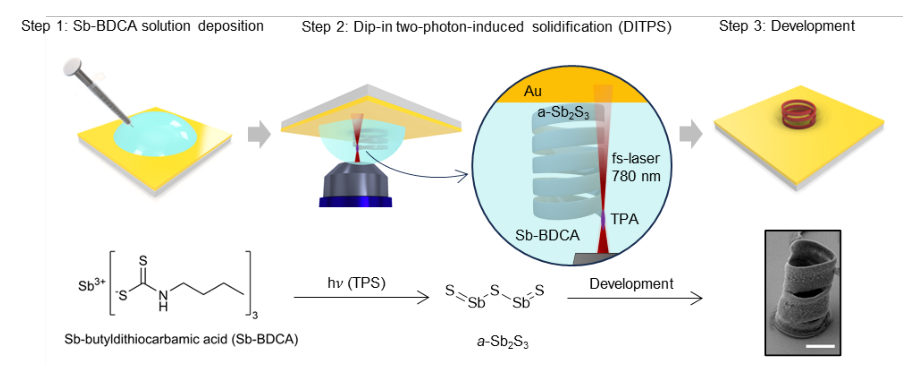
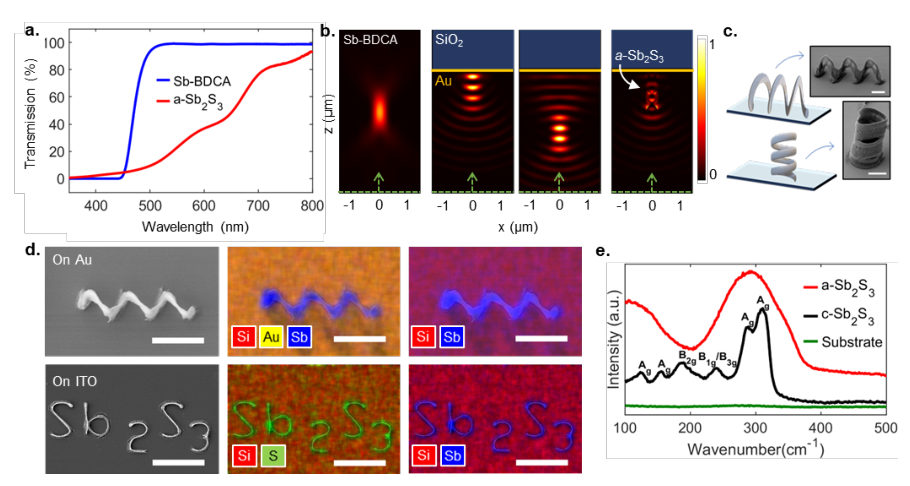
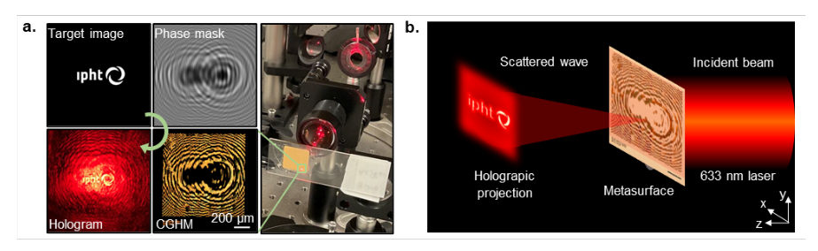
Summary. This paper presents a new 3D printing technique called DITPS that allows for the direct, maskless fabrication of complex 3D nanostructures using high-index phase-change materials. By using a liquid precursor, the method overcomes the geometric limitations of traditional thin-film deposition and lithography. This enables rapid prototyping of advanced photonic devices like 3D metasurfaces and holograms.
Why it may be interesting. not directly relevant
Main problem. Current fabrication methods for high-index chalcogenide phase-change materials (PCMs) are limited to 2D or quasi-3D thin films, which restricts the ability to rapidly prototype complex, freeform 3D nanostructures.
Main result. The authors demonstrated a solution-phase direct printing method (DITPS) that enables the maskless, fast, and cost-effective 3D printing of high-index Sb2S3 structures, including helices, Fresnel zone plates, and holographic metasurfaces.
Method. Dip-in two-photon-induced solidification (DITPS) using a femtosecond laser to trigger the local decomposition of an Sb-BDCA precursor solution into solid amorphous Sb2S3.
Model / system. The experimental platform involves a Nanoscribe GT2 two-photon printer using an Sb-BDCA precursor solution and high-NA objectives, printing Sb2S3 structures on Au-coated and ITO-coated SiO2 substrates.
Key observables. Refractive index change, optical loss, lateral and axial resolution, elemental composition (via EDX), and optical functionality of printed structures (via transmission and microscopy).
Important parameters / regimes. 780 nm laser wavelength, sub-micron lateral resolution (~280 nm), refractive index change (delta RI > 0.7), and high-NA (1.4) objective lens.
Assumptions / limitations. The simulation of voxel shape assumes a consistent X-polarized, 780 nm, NA 1.4 excitation source configuration.
Figures summary. Figure 1 shows the workflow for Sb2S3 synthesis; Figure S2 displays a gallery of 3D printed helical structures; Figure S3 shows EDX spectra for elemental verification.
Paper structure. The paper introduces the limitation of current PCM fabrication, describes the chemical synthesis of the precursor, details the DITPS printing process and voxel simulation, demonstrates structural versatility (helices and 2D patterns), proves optical functionality (FZPs and CGHMs), and compares the method to EBL and wet-etching.
Chalcogenides have recently emerged as an important class of phase-change materials (PCMs) for nanophotonics, owing to their very high refractive index (RI) and low optical loss in the visible to near-infrared range. They exhibit an ultralarge RI change (> 0.7) upon phase transition, which can be triggered by multiple stimuli such as electrical bias, laser illumination or thermal heating. These properties make them highly appealing materials for flat optics and metasurface applications. Current nanophotonic implementations of chalcogenide PCMs mostly rely on two-dimensional (2D) or quasi three-dimensional (3D) thin film patterning based on the coating of chalcogenide materials from a solid-state target. This limits fast prototyping of 3D freeform micro- and nanostructures, thus restricting geometric design freedom and device functionality. Here, we demonstrate a solution-phase direct printing of chalcogenide PCMs into functional structures. The method is based on dip in two photon-induced solidification (DITPS) of a specially synthesized antimony trisulfide (Sb2S3) precursor solution. Direct printing with DITPS is simple, maskless, fast and cost effective, enabling true freeform 3D printing of photonic devices with sub micron resolution. We show direct writing of Sb2S3 helices with different wire cross section profiles on gold and ITO substrates, as well as functional planar Fresnel zone plates (FZPs) and computer generated hologram metasurfaces (CGHMs) in a single printing step. This freeform DITPS approach thus enables rapid 3D prototyping of high index metasurfaces and opens a route to integrating high-index PCMs into existing photonic architectures and device platforms.
Authors: A. Dana, D. Terrones, S. Gelin, I. Dabo
Type: both · Category: statistical mechanics · PDF: https://arxiv.org/pdf/2605.02688v1
Analysis basis: full PDF text, analyzed in chunks
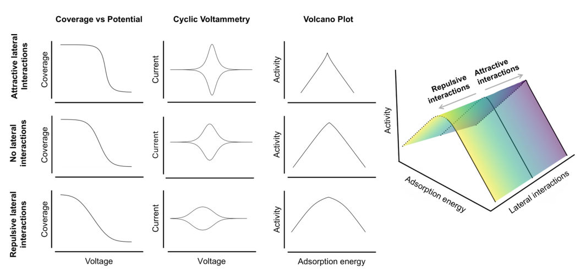
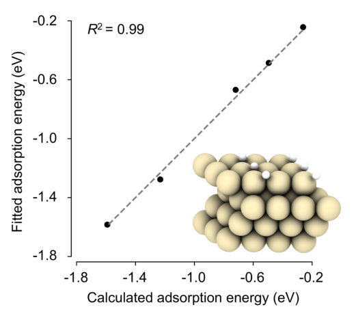
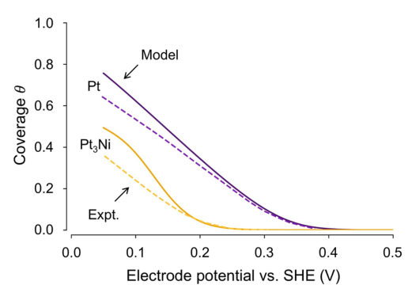
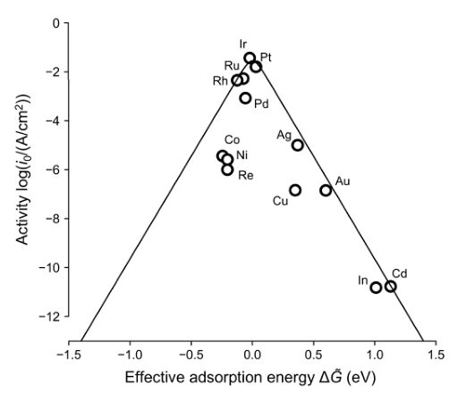
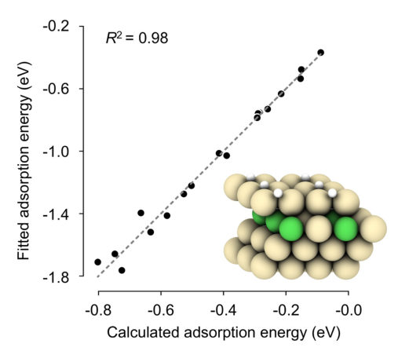
Summary. This paper introduces a new analytical framework to predict the catalytic activity of complex alloys by accounting for both lateral adsorbate interactions and site heterogeneity. By projecting high-dimensional energy landscapes onto a single effective descriptor, the authors provide a way to unify complex multi-site activity trends into a single, interpretable volcano plot. This allows for more efficient screening of multi-component materials for hydrogen production.
Why it may be interesting. not directly relevant
Main problem. Traditional Sabatier-type volcano plots fail for complex multi-site alloy catalysts because they ignore coverage-dependent lateral interactions and site heterogeneity.
Main result. The authors developed a unified descriptor mapping that projects a multidimensional activity landscape onto a single effective coordinate, successfully capturing multi-peaked activity trends in alloys.
Method. The study combines Density Functional Theory (DFT) for energetics with a mean-field statistical mechanics model using a grand canonical ensemble and a regular mixing model.
Model / system. The system focuses on platinum-based alloys (e.g., PtNi) for the Hydrogen Evolution Reaction (HER). The model uses a lattice-based Hamiltonian incorporating site-specific binding energies and pairwise lateral interaction energies.
Key observables. Hydrogen coverage, voltammetric (CV) peaks, exchange current density, and catalytic activity (HER).
Important parameters / regimes. Binding energy (I), interaction strength (J), hydrogen coverage (theta), and electrode potential (U).
Assumptions / limitations. Uses a mean-field approximation for configurational entropy and assumes adsorbed hydrogen is in thermodynamic equilibrium with a reservoir of protons and electrons.
Figures summary. Figure 1 shows how lateral interactions modify isotherms and CV peaks; Figure 2 is a parity plot of predicted vs. DFT energies; Figure 3 compares predicted vs. experimental coverage; Figure 4 shows the new effective descriptor volcano plot; Figure 7 shows the polynomial mapping and resulting multi-peaked volcano.
Paper structure. The paper begins by identifying the limitations of single-site descriptors, introduces a mean-field model for coverage-dependent interactions, extends this to multi-site alloy systems, proposes a reduced descriptor mapping, and validates the framework against DFT and experimental data.
We present a precise and general method to map the activity of electrocatalysts across multiple sites. Starting from a mean-field statistical mechanics model, we introduce an effective adsorption free energy descriptor that explicitly incorporates lateral adsorbate-adsorbate interactions, enabling the construction of coverage-consistent volcano relationships. Extending this approach, we show that adsorption energetics and interaction strength define a two-dimensional activity landscape that gives rise to a "volcano ridge" that captures the coupled influence of binding and interactions on catalytic performance. For multi-site systems, we demonstrate that the inherently nonlinear coupling between distinct adsorption environments leads to multi-peaked activity trends that cannot be represented by conventional single-site descriptors. To address this, we introduce a reduced descriptor mapping that projects the multidimensional activity landscape onto a single effective coordinate while preserving the underlying physics of site heterogeneity and lateral interactions. The resulting framework generalizes Sabatier-type analysis to complex alloy catalysts and provides a physically interpretable route for screening electrocatalytic materials of arbitrary compositional complexity.
Authors: Cheng-Ao Ji, Lingling Tao, James M. Rondinelli, Xue-Zeng Lu
Type: both · Category: other · PDF: https://arxiv.org/pdf/2605.01724v1
Analysis basis: full PDF text, analyzed in chunks
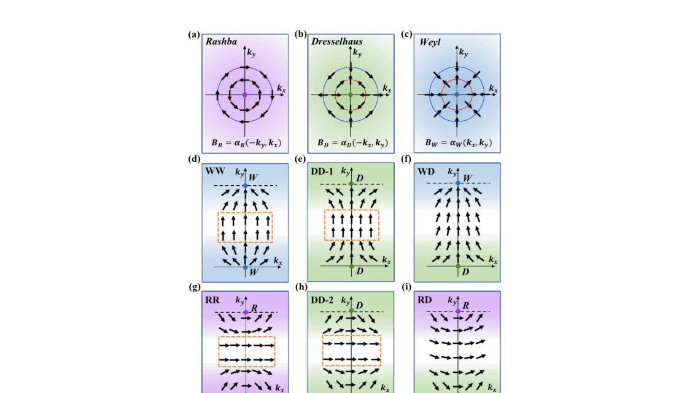
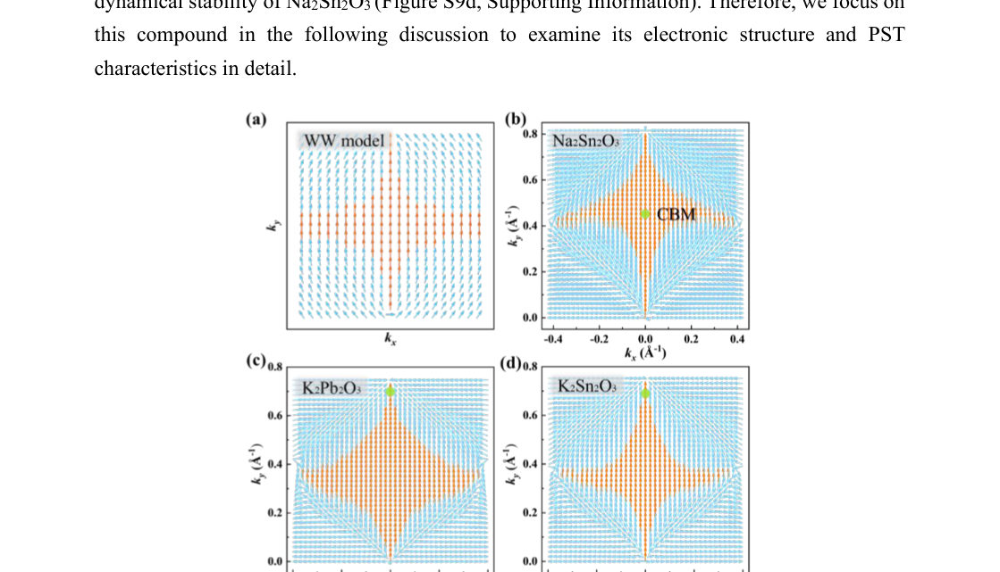
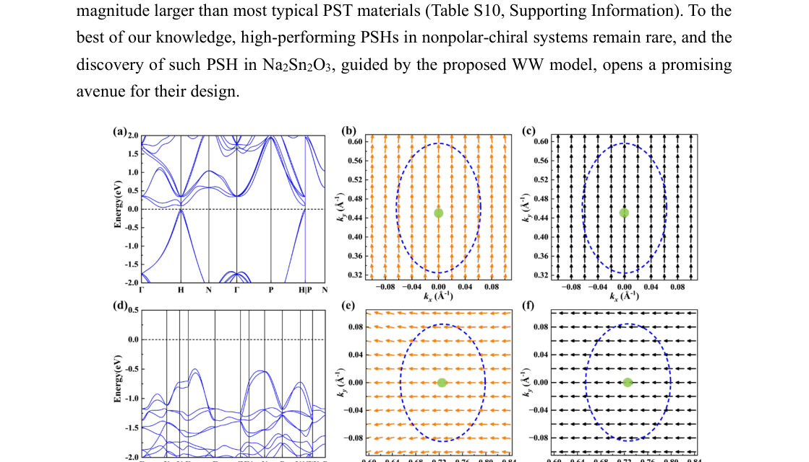
Summary. This paper introduces a universal principle for designing materials with high-quality persistent spin textures by leveraging the interaction of multiple spin-orbit fields. It identifies specific compounds that can host extremely long spin lifetimes, providing a roadmap for developing next-generation spintronic devices.
Why it may be interesting. not directly relevant
Main problem. The scarcity of materials exhibiting high-quality Persistent Spin Textures (PST) characterized by large Brillouin zone areas, minimal spin deviation, and exceptionally long spin lifetimes.
Main result. The authors establish a universal design principle based on the interplay of spin-orbit fields from different k-points, identifying new classes of high-quality PSTs and predicting specific materials like Na2Sn2O3 and AgClO4 with long spin lifetimes.
Method. The study combines symmetry analysis, k.p effective Hamiltonian modeling, and first-principles Density Functional Theory (DFT) calculations with high-throughput screening of the Materials Project database.
Model / system. The research focuses on noncentrosymmetric crystals (polar, nonpolar, chiral, and achiral) using a universal k.p effective Hamiltonian framework that captures the interaction of Rashba, Dresselhaus, and Weyl-type spin-orbit fields.
Key observables. Spin deviation (angle), PST area in the Brillouin zone, and spin lifetime (nanoseconds).
Important parameters / regimes. Spin-orbit coupling coefficients (alpha, beta), spin deviation threshold (< 5 degrees), and wavevector range (~0.1 A^-1).
Assumptions / limitations. A linear-in-k approximation is used, which is justified by the small wavevector range of the high-quality PST regions.
Figures summary. Simulations of spin textures showing PST and non-PST regions; plots of PST area changes relative to doping and spin deviation thresholds; and illustrations of 3D spin texture characteristics in momentum space.
Paper structure. The paper introduces the problem of PST quality, presents a universal model for spin-orbit field interplay, classifies new PST classes via symmetry, identifies specific candidate materials through database screening, and demonstrates engineering strategies like pressure and doping.
Persistent spin texture (PST) describes a unique spin-momentum locking in momentum space that maintains a uniform spin orientation through portions of the Brillouin zone (BZ), enabling exceptionally long spin lifetimes which are essential for applications in spintronics. However, materials exhibiting large BZ regions of high-quality PST, characterized by minimal spin deviation and long spin lifetimes, remain scarce. Here a universal model is introduced to capture the formation of superior PST regions arising from the interplay of spin-orbit fields at different k points. Within this framework, high-quality PSTs are identified in several systems belonging to various point groups. Notably, the nonpolar-chiral compound Na2Sn2O3 exhibits ~0.02 Å-2 high-quality PST region, which can be reversed by the switching of geometric chirality, while AgClO4 (D2d symmetry) exhibits a 0.016 Å-2 PST region. Significantly, Na2Sn2O3 and AgClO4 host persistent spin helices with spin lifetimes of 0.5-7.4 ns and 0.9-2.5 ns, respectively, among the longest reported for PST materials. In addition, both chemical substitutions and the application of pressure are demonstrated as effective routes for engineering high-quality PST. Our findings not only establish a universal principle for high-quality PST, but also provide promising materials across various point groups for the next-generation spintronic devices.
Authors: Laxmipriya Nanda, Sohini Guin, Yasen Hou, Rajib Sarkar, Naresh Shyaga, Souvik Banerjee, A. Sundaresan, N. S. Vidhyadhiraja, Jagadeesh S. Moodera, Dhavala Suri
Type: experiment · Category: strongly correlated electrons · PDF: https://arxiv.org/pdf/2605.02677v1
Analysis basis: abstract only; PDF text extraction failed or PDF unavailable
Summary. This paper examines the superconducting properties of Ni/Bi bilayers, which feature strong spin-orbit coupling and exchange interactions. The researchers observed vortex transport driven by competing forces and concluded that the system primarily exhibits conventional s-wave superconductivity.
Why it may be interesting. not directly relevant
Main problem. Investigating the nature of superconductivity and vortex dynamics in Ni/Bi bilayers, specifically looking for evidence of unconventional pairing in a strong spin-orbit and exchange-coupled environment.
Main result. The study finds that vortex transport is dominated by competing Magnus and viscous forces, and that the superconductivity is well-described by a conventional s-wave order parameter.
Method. Magneto-transport studies near the superconducting transition temperature (Tc) and control experiments using a ferromagnetic insulator.
Model / system. A bilayer system consisting of ferromagnetic Nickel (Ni) coupled to Bismuth (Bi), a strong spin-orbit metal.
Key observables. Transverse resistance peaks, Tc (superconducting transition temperature), and vortex dynamics.
Important parameters / regimes. Transition temperature (Tc) of 3 to 4 K, out-of-plane magnetic fields, and exchange proximity effects.
Paper structure. The paper introduces the Ni/Bi bilayer system, describes magneto-transport measurements near Tc, analyzes vortex dynamics through transverse resistance, presents control experiments with ferromagnetic insulators, and concludes with an assessment of the superconducting order parameter.
Nickel/bismuth (Ni/Bi) bilayers are a promising platform for exploring unconventional superconductivity. Ferromagnetic Ni is coupled to Bi, a strong spin orbit metal that only becomes superconducting below approx 10 mK, forming a bilayer exhibits superconductivity at a much higher temperatures, a Tc of 3 to 4 K. Such a bilayer thus makes an ideal system to probe Cooper pairing in strong spin orbit coupled magnetic environments. Magneto transport studies near Tc reveal the behavior of vortex dynamics and exchange proximity effects. It is seen that isolated vortices of the bilayers respond sensitively to out of plane fields, producing antisymmetric transverse resistance peaks attributable to competing Magnus and viscous forces. Control experiments using a ferromagnetic insulator confirm that superconductivity extends throughout the bilayer, not just confined at the interface. Overall, the results provide a unified picture of transport dominated by vortex dynamics and show that a conventional s wave order parameter accounts for the observations, with any likely unconventional contributions being only subtle.